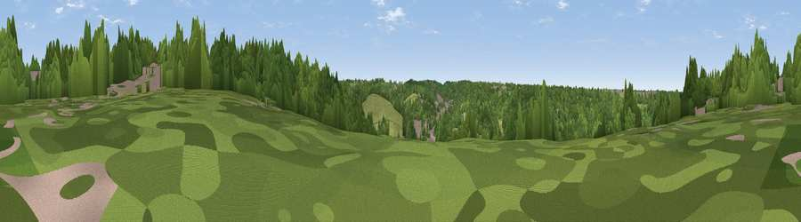

Viewpoint near Warlingham
#44420 in England · top 80% of its area beats it · near WarlinghamThe view, rendered

A 360° render of this exact spot computed from the terrain model, tree cover and land cover — summer colours, afternoon light, calibrated against photographs of famous viewpoints. Real trees, hedges and buildings will differ in detail.
The panorama
Grey silhouette: terrain skyline in each direction (720 bearings, Earth curvature and refraction included). Dashed green: skyline with trees (+15 m) and buildings (+8 m) as obstacles. Blue strip: how far the ground is visible on each bearing.
Where the view opens
Wedge length = distance to the farthest visible ground on that bearing (vegetation-aware). Rings at 10, 25 and 50 km.
What fills the view
69% woodland · 23% grassland · 7% built-up
Angular shares of the visible panorama (visual magnitude), not map area. Landscape diversity 0.35 (0–1 Shannon).
Key numbers
More beautiful places nearby
The staircase of upgrades: each row has a higher view potential than everything closer. Driving times are estimates from straight-line distance, calibrated against real road routing — check an actual route before setting out.
| Place | Direction | Drive | Score |
|---|---|---|---|
| Viewpoint near Hamsey Green | NNW · 2 km | ~4 min | 26.2 |
| Viewpoint near Woldingham | E · 4 km | ~8 min | 55.0 |
| Gravelly Hill | SSW · 5 km | ~10 min | 66.7 |
| Viewpoint near Caterham Valley | SSW · 5 km | ~11 min | 68.0 |
| Box Hill | WSW · 15 km | ~28 min | 70.4 |
| Viewpoint near Box Hill Village | WSW · 16 km | ~28 min | 71.0 |
| Viewpoint near Coldharbour | SW · 25 km | ~40 min | 71.3 |
| Wolstonbury Hill | S · 44 km | ~64 min | 79.6 |
51.30226, -0.06879 · source: screening · position refined by local search. Computed location — check access rights before visiting.